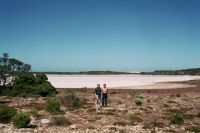
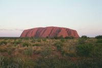
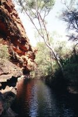
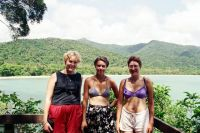
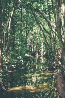

Caroline and Helen's Round-the-World Trip
Australia
January-February
Australia
Please click on a thumbnail to view the full size picture
|
View from West Head of Ku-Ring-Gai Chase National Park, just north of Sydney |
Palm Beach (anyone recognise this? Summer Bay?) |

Sydney Harbour Bridge from the Observatory |
|
View from the Sydney Tower over the harbour |
Monty the Koala, Tidbinbilla Nature Reserve, Canberra |
Karen the Koala, Tidbinbilla Nature Reserve, Canberra |
|
Edward the Emu, Tidbinbilla Nature Reserve, Canberra |
Kangaroos and Joeys, Tidbinbilla Nature Reserve, Canberra |
House of Representatives, (New) Parliament House, Canberra |
|
View from top of Parliament House (Caroline, Anna, Kes, Jacqui & Helen) |
The Aboriginal Tent Embassy, Canberra |
ANZAC War Memorial, Canberra |
|
Mount Koscuisko (in background) - Australia's tallest mountain |
Koscuisko National Park |
A river running through Koscuisko National Park |
|
Lake Gindabyne |
Lakes Entrance & 90 mile beach (the spit in the background) |
Wilson's Promontory National Park (temperate rainforest) |
|
View from Saddler's Ridge, Wilson's Promontory National Park |
Melbourne, looking out to Albert Park |
Inside the Senate, Victoria Parliament Buildings, Melbourne |
|
A Possum |
River Yarra Yarra, Melbourne |

Melbourne Cricket Ground |
|
A tram running around Melbourne |

South coast |
Mait's Rest, Otway NP |
|
The Twelve Apostles |
Loch Ard Gorge |
Apostles at sunset |
|
London Bridge has fallen down (used to be two arches!) |
Volcanic cave, Mount Eccles NP |
Mount Eccles crater lake |
|
An unforgettable blood red sunset |
Victorian Fossil Cave, one of the Naracoorte Caves |

Salt lake, Coorong NP |
|
Our "Snoozekroozer" |
Old veg market, Adelaide |

Ayers House, Adelaide |
|
The road to nowhere (spectacular views in the Outback!) |
Uluru (Ayers Rock) |
The Rock close up |
|

Uluru at sunset |
Kata Tjurta (The Olgas), from the top of Uluru |

Us at the top of Uluru |
|
Kata Tjurta (The Olgas) - 36 rocks 50km from Uluru |
Kata Tjurta (The Olgas) |
Kata Tjurta (The Olgas) ... again |
|
King's Canyon |

King's Canyon |

Garden of Eden, King's Canyon |
|
Small crested pigeon, King's Canyon |
Garden of Eden, King's Canyon |
Aboriginal watering hole |
|
Range of mountains near Uluru |
Caroline's little helicopter |
Alice Springs from Anzac Hill |
|
Either side of the Topic of Capricorn (and the campervan) |
Alien-themed roadhouse on Stewart Highway (up the middle) |
Devil's Marbles |
|
Termite hills |
Gold stamp battery, Charters Towers |
Gold stamp battery, Charters Towers |
|
Undara NP (volcanic area) |
Strangler fig, Mossman Gorge |

Cape Tribulation, Daintree NP |
|
Helen with Eggy, the 8 week old spectacled flying fox |
Anna with Eggy |
Caroline with Eggy |
|
A cool orange and black spider (and Helen's finger), Daintree NP |

Mangrove swamp, Daintree NP |
View over the tropical rainforest from the Canopy Tower, Daintree NP |
|
Us with Anita, our PADI Advanced Instructor, Oceanquest, Outer Great Barrier Reef |
"Oceanquest" (our liveaboard boat), Outer Great Barrier Reef |
Josephine falls (great rock slide!) |
|
The Big Mango |
The Whitsundays from Mount Rooper |
Cane Toad, Mount Rooper |
|
Eungella NP |
Eungella NP |
Kangaroos at the Capricorn Caves |
|
Entrance to Olsen's Capricorn Caves |
Spot the Python, Capricorn Caves |
Interesting formations, Capricorn Caves |
|
Flow stone, Cathedral Cave |
Crocodile at feeding time, Koorana Crocodile Farm (near Rockhampton) |
Finally he got the meat, Koorana Crocodile Farm |
|
Caroline and Harley (1 month old) |
Carpet Python, Fraser Island |
Wreck of the Maheno, Fraser Island |
|
Coloured Sands, Fraser Island |
Moon Point, Fraser Island |
Mystique the dolphin at feeding time, Tin Can Bay |
|
Mystique, Tin Can Bay |

Glass House Mountains |

Glass House Mountains |
|
Brisbane from Town Hall Clock Tower |
Town Hall, Brisbane |
Maritime Museum, Brisbane |
|
View of Brisbane from Mount Coot-tha |
Surfers Paradise as seen from Lamington NP |
Natural Bridge (waterfall flowing into a cave) |
|
Most Easterly Point in Oz (10 points if you can spot Helen) |
Lighthouse at Byron Bay |
"The rock" Roadhouse |
|
Big fermentation vats, Hunter Valley (wine region) |

Squashing the grapes, Hunter Valley |
Vines in the Hunter Valley |
|
Oldest brewery complex in the world |
The Big Merino |
Canberra from the telecoms tower |
|
Anna, Helen & Sushi in Canberra |
The Three Sisters, Blue Mountains |
Making lunch in our trusty campervan |
|
Making lunch in our trusty campervan |

Waterfalls, Blue Mountains |
The Three Sisters (the rocks behind, not us!), Blue Mountains |
|
Steepest funicular railway in the world, Blue Mountains |
Wentworth Falls, Blue Mountains |

A big lizard, Blue Mountains |
|
Sydney Harbour Bridge |
Sydney from the Harbour Bridge |